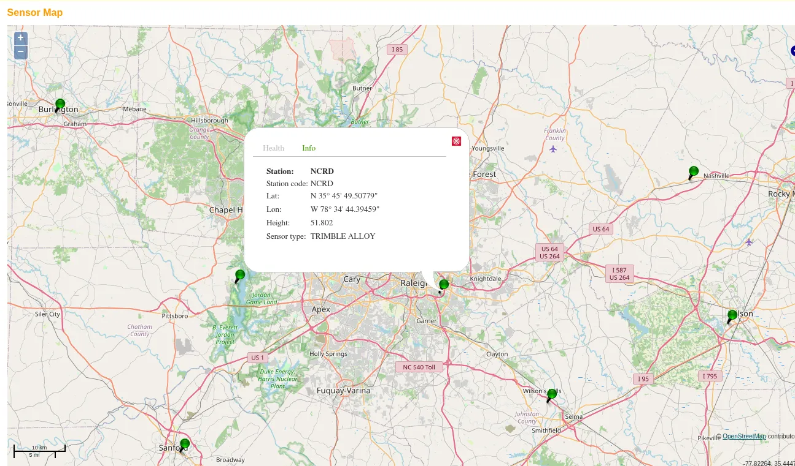
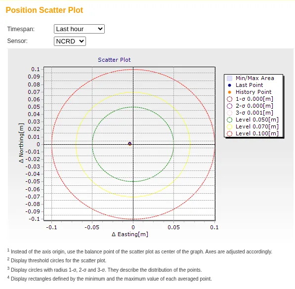

GNSS Field Protocol: Base Station and Checkpoints
Read this before the Fall 2026 Lake Wheeler field flight.
Distance education students: read this protocol, then watch How to Place Ground Control Points (GCPs) for Precise Drone Mapping for the GCP placement and survey in sections 3 and 5.
Equipment List
Bring closed-toe shoes, clothes for an hour outdoors, water, and a phone for point photos. There is no bathroom or water at the site.
Base coordinate methods
The base station sits on a practice mark. We will establish the coordinate of that mark three ways and compare them:
- Method A: the base receiver’s own averaged position, with no corrections.
- Method B: a real-time network (RTK) fix on the mark, collected with the rover using corrections from the North Carolina Real Time Network (NCRTN).
- Method C: the base receiver’s raw log, post-processed after the trip against NCRTN station NCRD. This is the most accurate, especially in height.
Methods A and B are collected in the field. Method C needs only the base log.
Plan
- Arrive and gather at the command area.
- Overview: what is being flown, why the GCPs and checkpoints exist, and where not to stand during the flight.
- Method B on the mark with the rover (section 1).
- Set up the base on the mark and start the log (section 2).
- Lay the four GCPs and survey them, everyone together, rotating on the rover (section 3).
- Preflight and launch. One battery over the GCP field (section 4).
- While the aircraft flies, groups rotate on the rover for 8 to 10 checkpoints, off the flight line (section 5). Then a second group re-occupies 3 of them.
- Land and check the photo count and geotags. Stop the rover and export the project. Stop the base log last. Pack up (section 6).
1. Method B: fix the mark with the rover
Do this before the base is set up.
- In Emlid Flow, connect the rover to the NCRTN caster: host rtn.nc.gov, port 2101, mountpoint
VRS_RTCM34_MSM5, course login. Corrections come through the tablet’s cell data. - Set the antenna height to the pole length. Do not change the pole length for the rest of the day.
- Hold the pole plumb on the mark. Wait for FIX. Record the satellite count and correction age. Collect a 2 minute averaged occupation.
- Record the coordinate on the field sheet as Method B.
2. Base station log
- Set the tripod over the mark and level it.
- Measure the antenna height from the mark to the bottom of the receiver. Record the height and note that it was measured to the bottom of the receiver. Emlid Flow adds the phase center offset. An antenna height error becomes a height error in Method C.
- Confirm open sky. Record the satellite count and PDOP.
- Start RINEX logging at 1 Hz. Record the start time. The log runs until the last rover point is collected.
- Method A: with the base in SINGLE, average its position for 1 minute and record the coordinate. Skip this if short on time; it can be computed from the log later.
- Do not reconfigure, restart, or bump the base until the end of the session.
3. GCPs
Set the rover project to NAD83(2011) / North Carolina in meters (EPSG:6542) with NAVD88 (GEOID18) height. Write the coordinate system on the field sheet. The processing labs use EPSG:3358 (NAD83(HARN)), which differs from NAD83(2011) by about 2 cm at this site.
- Lay the four GCPs on the pre-chosen spots, one toward each corner of the flight area, none on the very edge. Weight them down. Do not move a GCP after it has been surveyed.
- Measure the center of each GCP with a 30 second averaged FIX occupation. Rotate on the rover so everyone runs an occupation. These four points control the photogrammetric processing.
- Photograph each GCP with the pole tip visible and record its number on the field sheet.
4. The flight
Lake Wheeler is Class G airspace, so no authorization is needed, and the site is inside the North Carolina State University Lake Wheeler West FRIA, so Remote ID is not required. Daylight is 6:59 am to 7:22 pm. The flight stays at or below 400 ft AGL. Fly one battery, one block over the GCP field; the second battery is the spare.
Preflight checklist
Before leaving:
At the site:
During the flight:
After landing:
The FAA advisory FTBRNC GPS 26-76 schedules GPS interference testing centered on Fort Bragg on September 14 to 16, daily 1500Z to 2300Z, which is 11:00 am to 7:00 pm EDT. The test starts in the middle of the field window. Lake Wheeler is 85 km (46 NM) from the center, and the advisory’s area covers the whole state from the surface up.
5. Checkpoints
Checkpoints are withheld from processing and used to measure the accuracy of the products.
- Pick points you can find in the imagery: pavement corners, sidewalk joints, manhole edges, paint marks. Avoid grass and gravel.
- Hold the pole plumb, confirm FIX, and collect a 30 second averaged occupation.
- Photograph the point with the pole tip visible and record the point number on the field sheet.
- Spread the points across the area and its elevation range. Put several on level ground for the vertical check.
NCRTN station NCRD
Method B uses live corrections from the NCRTN. Method C post-processes the base log against one of its stations. The nearest station to Lake Wheeler is NCRD (Raleigh DOT), a Trimble Alloy at 35.763752, -78.578998, ellipsoid height 51.802 m, 11.5 km from the mark. The next nearest stations are 23 to 52 km away.

The network monitors each station’s position against its published coordinate. Over one hour NCRD varies by 1 mm at 3 sigma.

Both pages are public at rtn.nc.gov under Sensor Map and Status Messages.